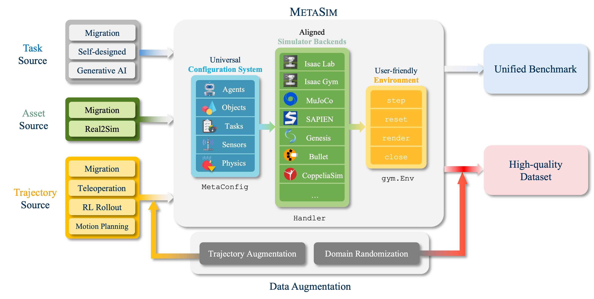
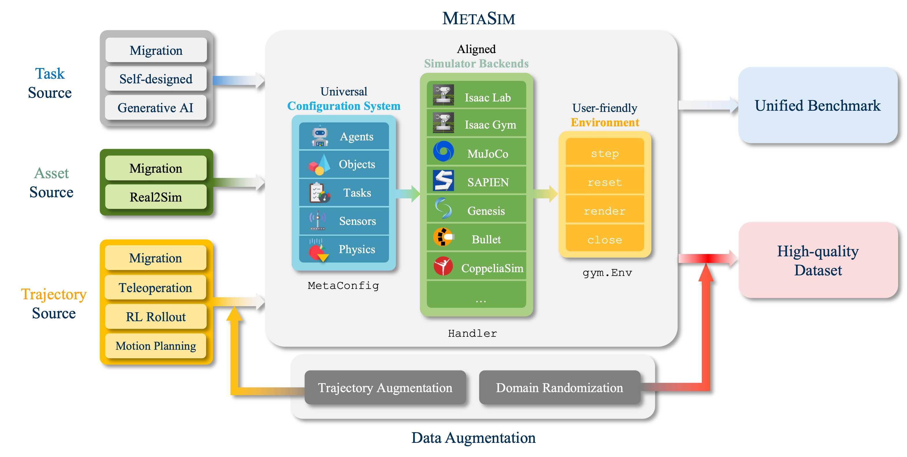
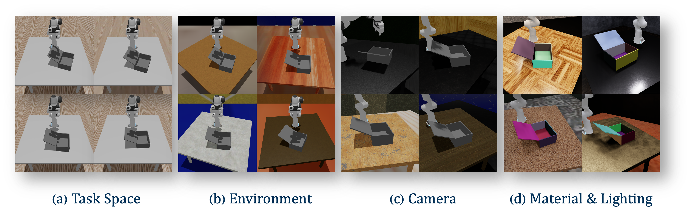

MetaSim Infrastructure
MetaSim is a unified simulation platform with a universal configuration system and a unified interface, combining existing simulators and rendering engines into a single framework.
Data scaling and standardized evaluation benchmarks have driven significant advances in natural language processing and computer vision. However, robotics faces unique challenges in scaling data and establishing reliable evaluation protocols. Collecting real-world robotic data is resource-intensive and inefficient, while benchmarking in real-world scenarios remains highly complex. Synthetic data and simulation offer promising alternatives, yet existing efforts often fall short in data quality, diversity, and benchmark standardization.
To address these challenges, we introduce RoboVerse, a comprehensive framework comprising a simulation platform, a synthetic dataset, and unified benchmarks. Our simulation platform supports multiple simulators and robotic embodiments, enabling seamless transitions between different environments. The synthetic dataset, featuring high-fidelity physics and photorealistic rendering, is constructed through multiple approaches including migration from public datasets, policy rollout, and motion planning, etc. enhanced by data augmentation. Additionally, we propose unified benchmarks for imitation learning and reinforcement learning, enabling consistent evaluation across different levels of generalization.
At the core of the simulation platform is MetaSim, an infrastructure that abstracts diverse simulation environments into a universal interface. It restructures existing simulation environments into a simulator-agnostic configuration system, as well as an API aligning different simulator functionalities, such as launching simulation environments, loading assets with initial states, stepping the physics engine, \etc. This abstraction ensures interoperability and extensibility.
Comprehensive experiments demonstrate that RoboVerse enhances the performance of imitation learning, reinforcement learning, and world model learning, improving sim-to-real transfer. These results validate the reliability of our dataset and benchmarks, establishing RoboVerse as a robust solution for advancing simulation-assisted robot learning.
MetaSim is a unified simulation platform with a universal configuration system and a unified interface, combining existing simulators and rendering engines into a single framework.
RoboVerse provides a large-scale, high-quality dataset.

RoboVerse provides a standardized benchmark for both imitation learning and reinforcement learning.
@misc{geng2025roboverse,
title={RoboVerse: Towards a Unified Platform, Dataset and Benchmark for Scalable and Generalizable Robot Learning},
author={Geng, Haoran and Wang, Feishi and Wei, Songlin and Li, Yuyang and Wang, Bangjun and An, Boshi and Cheng, Charlie Tianyue and Lou, Haozhe and Li, Peihao and Wang, Yen-Jen and Liang, Yutong and Goetting, Dylan and Xu, Chaoyi and Chen, Haozhe and Qian, Yuxi and Geng, Yiran and Mao, Jiageng and Wan, Weikang and Zhang, Mingtong and Lyu, Jiangran and Zhao, Siheng and Zhang, Jiazhao and Zhang, Jialiang and Zhao, Chengyang and Lu, Haoran and Ding, Yufei and Gong, Ran and Wang, Yuran and Kuang, Yuxuan and Wu, Ruihai and Jia, Baoxiong and Sferrazza, Carlo and Dong, Hao and Huang, Siyuan and Sreenath, Koushil and Wang, Yue and Malik, Jitendra and Abbeel, Pieter}, year={2025},
primaryClass={cs.RO},
url={https://roboverseorg.github.io/},
}